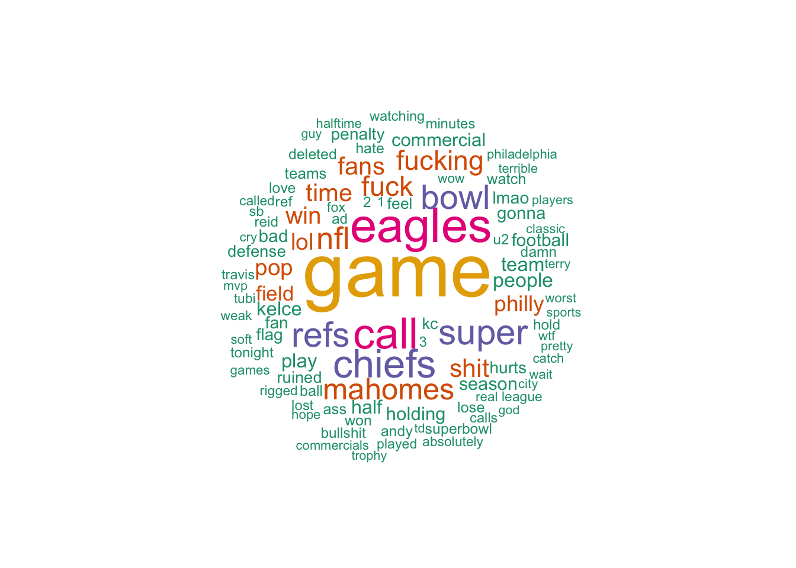
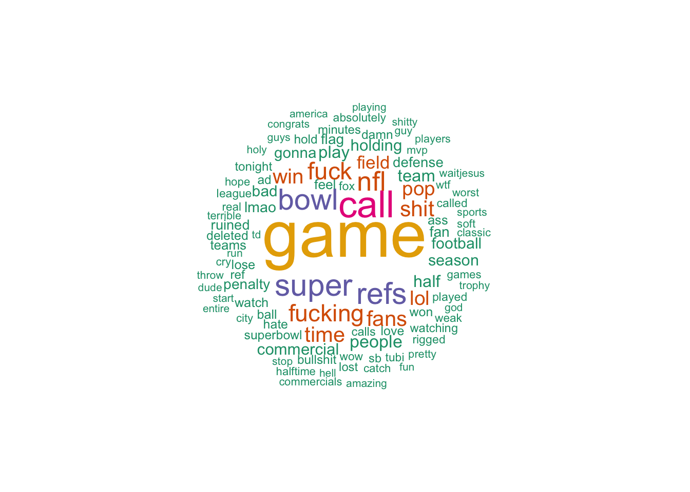
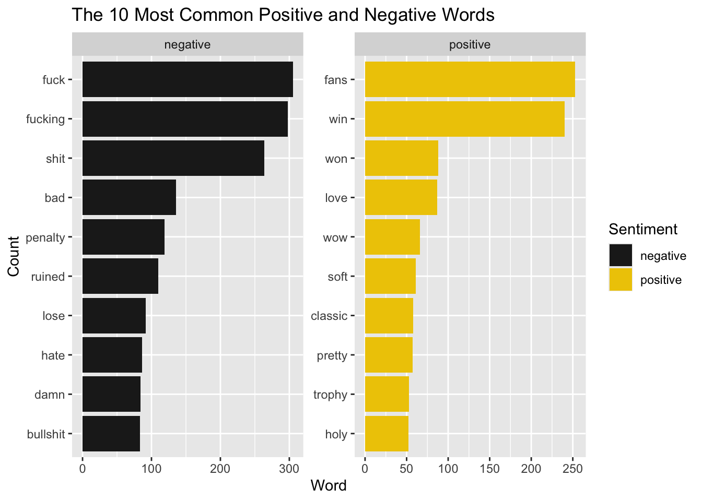
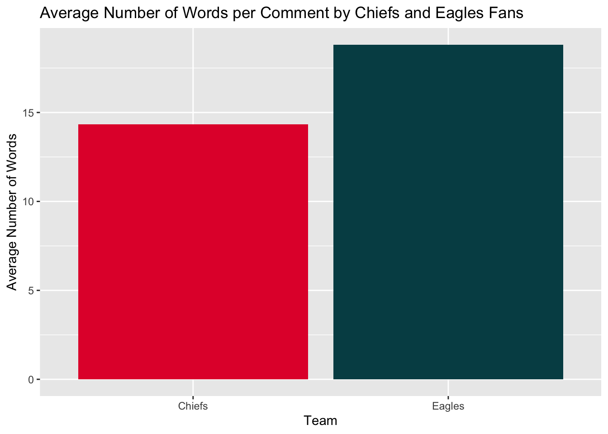
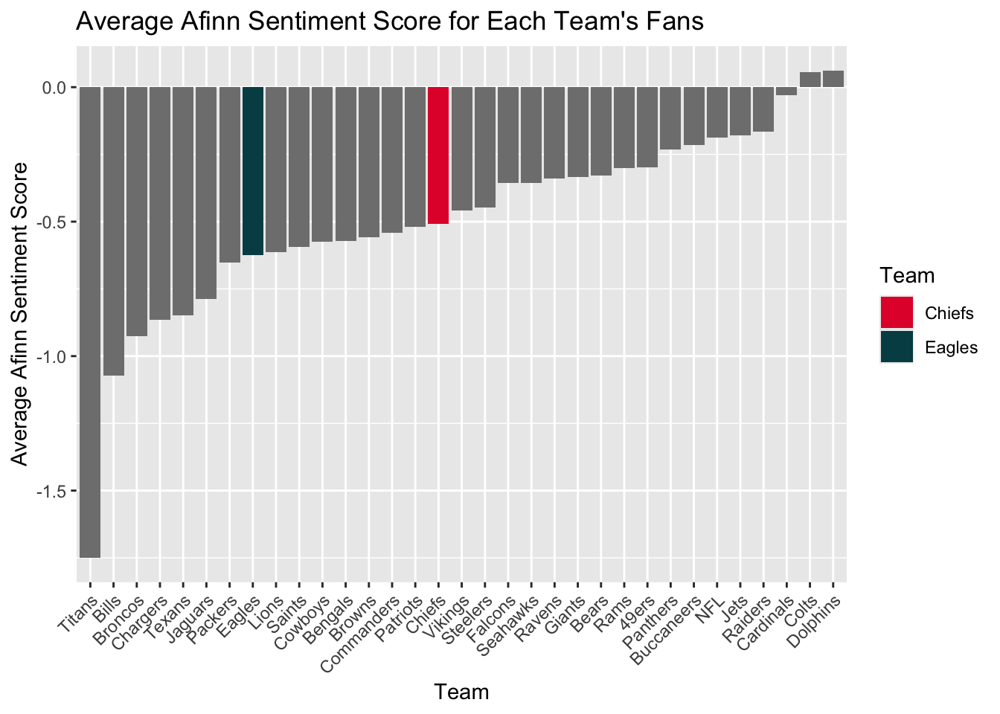

NFL Fan Comments
Introduction
Every year, the Super Bowl is one of the biggest sporting events in the world. The two best teams in the National Football League (NFL) battle it out in a winner-take-all game. This game brings people together to party, watch the new commercials, see which team wins, and of course, share their thoughts on social media. For many fans, Reddit is the social media platform they turn to to express their opinions.
Reddit consists of subreddits, which are groups where people with common interests can communicate with each other. One such subreddit is r/nfl, which opens discussions for every NFL game, so fans can discuss the game live. This is no different for the Super Bowl, where thousands of comments are made over the course of the game.
A data set, sourced from Kaggle, collected comments made on the r/nfl subreddit during Super Bowl 57 in 2023, which was between the Kansas City Chiefs and the Philadelphia Eagles. This data allows us to get a sense of the attitudes and feelings of NFL fans during the big game.
Warning: Many explicit words in the data and following plots.
Data Wrangling
After loading the original data set, there are a few adjustments I made to make text analysis more straight-forward. First, I created a new tidy version of the data set. This consisted of using the unnest function to make each row a single word, and then I created a new column that states the team each commenter is a fan of. The flair variable tells us what teams the commenter is a fan of, however, some of the flairs list more than one team. So, I took the first team listed in each commenter’s flair and listed that team under the new team variable. On top of the tidy data set, I created a data set from the tidy one that does not include any stop words.
Most Common Words
From Figure 1, which shows 100 of the most common words in the data set, excluding stop words, we can see that the word “game” appears the most often, followed by “call”, “eagles”, “chiefs”, super”, “bowl”, “refs”, and then a couple explicit words. We can see that many of the comments were likely in direct response to penalties that the referees may have called. Additionally, there are a few names that make an appearance, such as “mahomes”, “hurts”, and “kelce”, just to name a few. These players are all some of the most impactful and well known players on their respective teams. Let’s create a new wordcloud that doesn’t have any names, numbers, or any reference to the two teams playing in the Super Bowl.

This new wordcloud is for the most part the same, but we see an overwhelming amount of negative words, especially curse words. Let’s move to sentiment analysis, so we can get an understanding of how positive and negative the comments are.
Sentiment Analysis

Here, Figure 3 indicates the ten most negative and the ten most positive words. We can see that there are many more negative words mentioned than positive ones, as six of the ten negative words are mentioned over one hundred times, while only two of the ten positive words are mentioned over one hundred times. There is a similar trend with the wordcloud, where explicit words are very popular among the commenters. Additionally, the word penalty suggests that many comments are related to referee calls. So far, it seems like these commenters prefer to share their complaints and unfavorable thoughts on social media over any positive ones they may have.
Something to note is that some of the words under the positive sentiment list might not have been used in a positive way. For example, “soft” is the sixth most common positive word, however, in the context of football, if someone calls a player soft, that’s more often than not an insult to the player. Or, a word like “holy” often precedes negative words, is listed among the most common positive words.
Comparing Chiefs and Eagles Fan Comments
Super Bowl 57 featured the Kansas City Chiefs and the Philadelphia Eagles, and the Chiefs ended up wining the game 38-35. Since the Chiefs won the game, are there differences in comments from their fans compared to Eagles fans? This is what we will explore in this next section.

Figure 4 is a column chart showing the average number of words per comment by Chiefs fans and Eagles fans. On the x-axis is team, with the two teams in the chart being the Kansas City Chiefs and the Philadelphia Eagles. On the y-axis is the average number of words per comment, which ranges between 14 and 19 words. Chiefs fans have an average word count of about 14 for their comments, while Eagles fans have an average word count of about 19 for their comments. This chart tells us that Eagles fans have longer comments on average, compared to Chiefs fans. We don’t have a clear reason for this relationship, but from what we have seen, many of the comments have negative sentiments. Since the Eagles lost, Eagles fans may have been more inclined to share more of their negative thoughts about the team and the game than Chiefs fans.

Figure 5 is a column chart that shows the average Afinn sentiment score for each team’s fan’s comments. On the x-axis is team, which lists all thirty-two NFL teams, plus another column for commenters who have not identified themselves as fans with any particular team, but rather as general fans of the NFL. On the y-axis is the average Afinn sentiment score, which, in this chart, ranges from -1.75 to 0.1. This chart shows us that the majority of comments made by the fans of all NFL teams are negative. The team with the fans with by far the most negative comments is the Tennessee Titans, with an average Afinn score of about -1.75. The team with the fans with the most positive comments is the Miami Dolphins, with an average Afinn score of about 0.1. After the Titans, the next most negative fanbase is the Buffalo Bills, with an Afinn score of -1, and from there, the Afinn scores gradually increase closer to 0. There are only two teams with positive Afinn scores, the Miami Dolphins and the Indianapolis Colts. Also, the columns that represent the Chiefs and the Eagles are highlighted. The average Afinn scores are not too different between these two teams, despite the Chiefs winning the Super Bowl, and Chiefs fans having little reason to complain about the result of the game. However, the Eagles do have a slighly lower Afinn score of about -0.6, compared the Chiefs Afinn score of about -0.5.
Conclusion
In this project, we examined the most common words used in r/nfl comments during Super Bowl 57, and the sentiments of the most common words. Additionally, we looked into potential differences in comments between Chiefs fans and Eagles fans, as those were the two teams competing in the Super Bowl. We found that the majority of the comments have a negative sentiment, with many commenters using explicit language to get their point across.
Sports fans comment on many different social media platforms, however, Reddit is unique in that its user are anonymous. This may be part of the reason for the extremely negative sentiments NFL fans have towards the game, and specifically, Super Bowl 57, since the fans cannot be held responsible for what they say. However, across most social media sites, it’s easier to find comments complaining about an athlete than praising an athlete. This gives us evidence that sports fans are much more likely to share their criticisms of their teams than their praises.